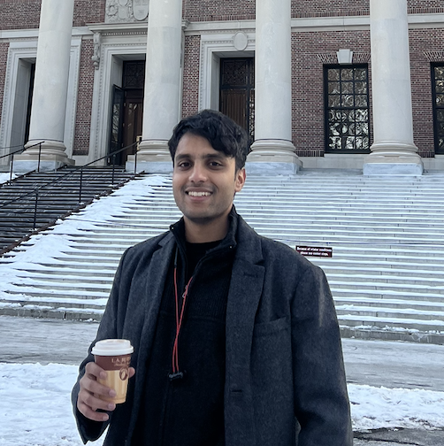

Varun Satheesh
Computer Science Graduate Student at Brown University | ML Researcher | Robotics Enthusiast
I'm a Computer Science graduate student at Brown University with a passion for Machine Learning, Robotics, and 3D Graphics. My research focuses on Graph Neural Networks, 3D reconstruction, and LLM-enhanced robotic systems. I've worked on projects ranging from network throughput prediction to autonomous robot tool selection, combining cutting-edge AI with practical applications.
Research: Machine Learning,Robotics, 3D Reconstruction, Computer Vision, Gaussian Splatting
ML Expertise: GNNs, PINNs, Few-shot Learning
Robotics: KUKA robots, ISAAC simulation, Mesh editing
Publications: IEEE papers, ICECTASET, ICLR 2025 submission
Companies: Dassault Systèmes, Hewlett Packard Enterprise, SimplyFI SoftTech, Microsoft PES Innovation Lab, Quest Informatics